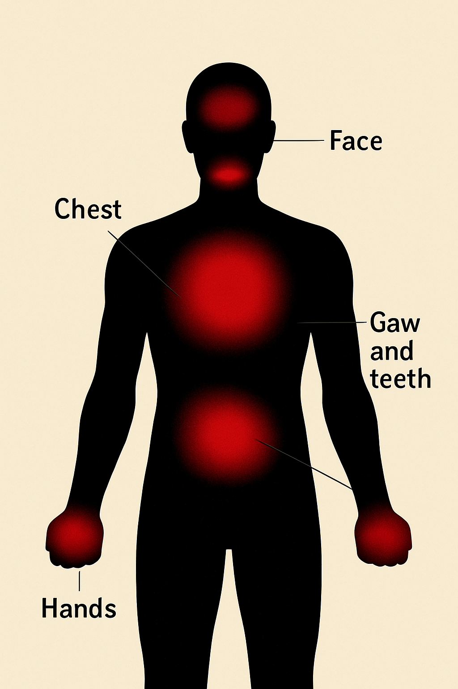

¿Dónde se siente?

El enojo es una emoción natural que puede ser útil para identificar injusticias o peligros.
El enojo es una emoción básica que surge como respuesta a situaciones percibidas como injustas, frustrantes o amenazantes. Se caracteriza por un sentimiento intenso de molestia y tensión que puede variar en intensidad desde una ligera irritación hasta una furia intensa.
Esta emoción tiene una función adaptativa importante, pues prepara al cuerpo para responder a desafíos o conflictos, activando mecanismos de defensa y motivando a la acción para resolver problemas.
La palabra “enojo” proviene del latín inodium que significa “sentimiento de odio o disgusto”. Con el tiempo, en el español evolucionó para describir el estado emocional de molestia o ira leve a moderada.
- Es una emoción natural y necesaria para la defensa personal y la justicia.
- Puede expresarse de manera saludable o destructiva, dependiendo de cómo se gestione.
- El enojo activa respuestas fisiológicas como aumento de la presión arterial y tensión muscular.
- Gestionado adecuadamente, puede fomentar soluciones y mejoras personales y sociales.
El enojo se manifiesta en varios niveles:
- Físico: tensión muscular, puños apretados, rostro rojo o fruncido.
- Emocional: sensación de frustración, irritabilidad, deseos de confrontar.
- Conductual: gritar, discutir, o incluso agresividad en casos extremos.
- Fisiológico: aumento del ritmo cardíaco, sudoración, respiración acelerada.
Aunque a menudo se percibe como negativa, el enojo también tiene beneficios:
- Motiva el cambio ante situaciones injustas o insatisfactorias.
- Incrementa la fuerza y la determinación para superar obstáculos.
- Favorece la comunicación clara cuando se expresa adecuadamente.
- Permite establecer límites saludables en las relaciones.
El enojo y la ira se relacionan, pero no son lo mismo:
El enojo suele ser una molestia pasajera y controlable, mientras que la ira implica una emoción más intensa, a menudo difícil de manejar y que puede derivar en agresiones o comportamientos destructivos.
Aprender a reconocer y expresar el enojo de manera saludable es fundamental para el bienestar emocional y las relaciones interpersonales.
Técnicas como la comunicación asertiva, la respiración profunda y la reflexión ayudan a canalizar esta emoción para que sea constructiva y no dañina.
Puedes aprender más sobre otras emociones en la página de la alegría.
Beneficios de gestionar el enojo
- Reducción del estrés y mejora del bienestar emocional.
- Mejora la comunicación y las relaciones personales.
- Previene problemas de salud asociados con la tensión crónica.
- Fortalece la autoestima y la autoeficacia.
- Fomenta un ambiente social más armonioso.
Datos curiosos
- El enojo es una de las emociones más universales y se encuentra en todas las culturas.
- El color rojo se asocia psicológicamente con el enojo y la pasión.
- Algunas personas liberan el enojo con actividades físicas como el deporte.
- El enojo mal gestionado puede afectar la salud cardiovascular.
Estrategias para controlar el enojo
- Practicar la respiración profunda para calmar el cuerpo.
- Tomar un tiempo fuera para reflexionar antes de reaccionar.
- Expresar el enojo de forma asertiva y respetuosa.
- Realizar actividad física para liberar tensión.
- Buscar ayuda profesional si el enojo es frecuente o descontrolado.
Ejemplos en la vida diaria
- Sentir molestia cuando alguien no cumple un compromiso.
- Experimentar frustración al enfrentar injusticias.
- Molestarse por discusiones o malentendidos con amigos o familia.
- Reaccionar ante situaciones de tráfico o retrasos.
- Expresar descontento en el trabajo por carga excesiva o mal trato.